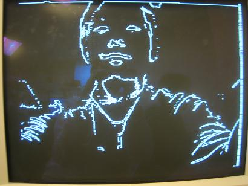

Real-Time EdGe Detection
Andrew Chin [ECE MEng, hc454 (at) cornell.edu] & Gladys Chan [Systems MEng, gtc32 (at) cornell.edu]
Introduction | High Level Design | Program/Hardware Design | Result | Conclusion | Appendix
| Introduction |
For our ECE536 final project, we have implemented real-time sobel edge detection. Traditionally, sobel edge detection is done on still images. This project uses a 2MP camera to continuously capture an image stream, and sobel edge detection is performed real-time on an FPGA and displayed to a VGA monitor. Our motivation arose from our interest in computer vision and digital image processing.
Edge detection is extensively used in image segmentation to divide an image into areas corresponding to different objects. Edges occur in parts of the image with strong intensity contrast, which often represent object boundaries.
Edges can be detected by applying a high pass frequency filter in the Fourier domain or by convolving the image with an appropriate kernel in the spatial domain. Edge detection is commonly performed in the spatial domain, because it is computationally less expensive and often yields better results. Since edges correspond to strong illumination gradients, the derivatives of the image are used for calculating the edges.
The basic edge-detection operator is a matrix area gradient operation that determines the level of variance between different pixels. The edge-detection operator is calculated by forming a matrix centered on a pixel chosen as the center of the matrix area. If the gradient value of this matrix area is above a given threshold, the middle pixel is classified as an edge. Figure 1 shows the setup of the project.
Figure 1: Setup of Real-Time Edge Detection System
| High Level Design |
Figure 2: High Level Diagram of Real-Time Edge Detection
In digital image processing, each image is quantized into pixels. The first step in edge detection is to convert the raw data to a grayscale image, where each pixel indicates the level of brightness of the image: from 0 representing black to 1023 representing white, with a 10-bit wide pixel. The image is then threshold-ed to create a clear gradient. Edge information for a particular pixel is obtained by exploring the brightness of pixels in its neighborhood. If all of the pixels in the neighborhood have the same brightness, it indicates that there is no edge in the area. However, if some of the neighbors are much brighter than the others, it indicates that there is an edge present.
Measuring the relative brightness of pixels in a neighborhood is mathematically analogous to calculating the derivative of brightness. The Sobel edge detection algorithm uses a 3x3 convolution table to store a pixel and its neighbors to calculate the derivatives. The table is moved across the image, pixel by pixel. For a 640x480 image, the convolution table will move through 302964 (638x478) different locations because we cannot calculate the derivative for pixels on the perimeter of the image.
The Sobel edge detection algorithm identifies both the presence of an edge and the direction of the edge. There are eight possible directions: north, northeast, east, southeast, south, southwest, west, and northwest.
For a convolution table, calculating the presence and direction of an edge and is done in three major steps: (ref. #3)
DerivNE_SW = (table[0,1] + 2* table[0,2] + table[1,2]) - (table[1,0] + 2* table[2,0] + table[2,1] )
DerivN_S = (table[0,0] + 2* table[0,1] + table[0,2]) - (table[2,0] + 2* table[2,1] + table[2,2] )
DerivE_W = (table[0,2] + 2* table[1,2] + table[2,2]) - (table[0,0] + 2* table[1,0] + table[2,0] )
DerivNW_SE = (table[1,0] + 2* table[0,0] + table[0,1]) - (table[2,1] + 2* table[2,2] + table[1,2] )
2. Find the value and direction of the maximum derivative, and the absolute value of the derivative that is perpendicular to the maximum derivative.
EdgeMax = Maximum of absolute values of four derivatives
DirMax = Direction of EdgeMax
EdgePerp = Absolute value of derivative of direction perpendicular to DirMax
3. Check if the maximum derivative is above the threshold. When comparing the maximum derivative to the threshold, the Sobel algorithm takes into account both the maximum derivative and the derivative in the perpendicular direction.
if EdgeMax + EdgePerp/8 >= threshold then
Edge = true
Dir = DirMax
else
Edge = false
Dir = 000
We chose to implement our entire project in hardware because of limited memory resources and performance. The camera captures the image and stores in the SDRAM, while the edge detection and VGA display use SRAM. First of all, the grayscale image is calculated by adding red component, blue component and 2 times the green component to avoid floating point computation. The heaviest computation is the convolution of gradient. However, this can be achieved by addition and subtraction operators. As a result, there are no complex computation that requires the use of NIOS II. If we were to use NOISII, we need to store the image into SRAM, so the software can be run on the SDRAM. It would require more time to save the image from SDRAM to SRAM than to compute the convolution directly from M4K blocks. In addition, not using NIOS II can speed up our development time. The time it takes to compile our hardware project takes around a minute, whereas implementing a NIOS II can easily take 5 to 10 minutes for everything to compile.
There are also hardware design techniques such as parallelism and pipelining on a FPGA, which is not possible in software implementation. Pipeline has been considered but not implemented because a continuous stream of data is not available. The implementation of pipelining introduces timing complexity and hardware overheads, because the computation is continuous even when the hardware reads a new row of data.
| Detailed Design |
Figure 3 shows the high-level overview of the interfacing between the different modules, where Table 1 gives the module description.
Figure 3: Hardware overview diagram
Grayscale
In order to perform edge detection, we would need to convert the RGB image from the camera to a grayscale image. In a grayscale image, the green component is required to be higher in intensity. We first tried to perform the conversion by scaling down the RGB image:
Grayscale = 0.3*red + 0.6*green + 0.1*blue
The closest that represents this to implement on hardware efficiently is as follows:
Grayscale = red>>2 + green>>1 + blue>>2
However, the resulting image did not achieve enough contrast for edge detection. After several refinements, it is discovered that scaling up the green give the best result for the DE2 camera.
grayscale = red + green<<1 + blue
Memory Interface
Since the camera result is outputted to the SDRAM fifo, we need to load the image into three M4K block sequentially as follows. The M4K blocks takes in 3 rows of pixels for edge detection computation
After three rows of pixels are inputted, edge detection state machine will begin to start computation on the first 3x3, as bolded below.
The edge detection result is then output to SRAM for VGA output. In the next iteration, the values are shifted to allow for next edge detection.

After one row of computation, we read one more row of M4K blocks. This time, we only need to read in row 4, and reusing the values of row 2 in the 2 nd M4K, and row 3 in the 3 rd M4K.
Extra care is taken in the edge detection state machine to ensure that we are doing computation with the correct data, so we are using the values b1, c1, d1 in the right order, and not d1, b1 and c1. In the next iteration, it becomes the following:
And then
The pattern repeats itself until the entire image is computed. It then continues to compute the next frame.
State Machines
Figure 4 below shows the two state machines implemented in this project. The first state machine is responsible for reading the captured image from SDRAM (in black), and a second state machine is responsible for the edge detection algorithm (in red). The arrows in blue shows the interaction between the two state machines. Different cases are taken into consideration to correctly update the oldest row of pixels in the M4K blocks and to populate the convolution table in the correct order.
Figure 4: Interaction between "edge detection state machine" and "load camera data state machine"
Timing Diagram for Handshaking
The timing diagram in Figure 5 below shows a partial operation of the edge operation. At the beginning of each row, the read data state machine reads 640 pixels from the SDRAM and writes to one of the three M4K blocks. While the state machine is reading data, load is set high and run_edge is low to disable the edge calculation state machine. When run_edge is high, the edge calculation begins with constructing the convolution table. It takes 3 cycles initially to populate the 3x3 convolution table from M4K blocks. The edge calculation begins when the convolution table has been updated. It takes four cycles to computer the maximum edge value. Then, the edge decision is saved into SRAM. One cycle latency is used to determine the next state. The next set of values will be read from M4K blocks if less than 640 have been read.
Figure 5: timing diagram of edge detection operation
Things we tried
1) Pipeline
Algorithm #1
- Read in first three lines of pixels
- Construct convolution table
- Start pipeline calculation, construct new convolution table
- Loop until x-2 pixels have been populated in the convolution table
- Read in one new line of pixels and repeat steps 2 to 4
- Loop until y-2 lines have been calculated
Algorithm #2
- Read in first three lines of pixels
- Construct convolution table
- Start pipeline calculation, construct new convolution table
- Loop until x-2 pixels have been calculated
- Read in one new line of pixels and repeat steps 2 to 4
- Loop until y-2 lines have been calculated
Algorithm #3
- Read in first two lines of pixels
- Read in first three pixels of the third line
- Construct convolution table
- Start pipeline calculation
- Read in next pixel
- Loop until x-2 pixels have been populated in the convolution table
- Read in first three pixels of the next line and repeat steps 3 to 6
- Loop until y-2 lines have been calculated
For algorithm 1 and 2, the FIFO state machine is in the same "always" block as the convolution table construction state machine, while the edge calculation is in a second "always" block and VGA output is in a third "always" block. For algorithm 1, the pipelining calculation continues when the FIFO state machine begins to read in new pixels. Precise handshaking is needed to stop the VGA output when all edge values have been calculated for the previous row. For algorithm 2, handshaking is simpler. However, it wasted couple cycles because the FIFO state machine needs to wait for the pipeline to complete. Algorithm 3 is the most efficient method, but it has a lot of timing issues. Handshaking is needed for reading new data, constructing convolution table, starting pipeline and stopping VGA display. The difficulty is more evident in the special cases for constructing the first edge output for every line, where it takes three cycles to populate the convolution table. This complicates the timing.
We have tried algorithm #1 and #2, but we could not display the correct image on the VGA. We tackled the problem by hand analysis and realized that there are many potential causes to the problem. We may not have register the correct values into the table before the pipeline begins, which results in calculation with the wrong values. We also find that an internal signal to activate the pipeline is needed. Also, certain registers were being calculated at the wrong stage (or clock cycle) in the pipeline because we may not have arranged registers at every stage to guide the propagation of all values correctly. This resulted in values being overwritten and an overall shifted image. Data was often being reused by successive clock cycles, and it is possible that the data can get overwritten by the next pixel before the edge calculations are completed. Although, we have tackled all these possibilities of problems, we could not successfully generate a perfect edge image within the time constraint of the project.
2) clocking using camera clock
The demo of camera from Terrasic has set the camera clocking to CCD_PIXCLK. If the VGA clock equals the CCD_CLK, the VGA image flickers and continuously moving upward.
3) memory register block
We tried using 3 arrays of memory of 640 pixels that are 10-bit wide. Although implementation with memory register blocks uses a lot of memory spaces as the registers are scattered in the memory, we could save a lot of computation cycles because we can assess the particular memory as an array directly (without the need of supplying the memory address 1 cycle before the data appears). Originally, we accessed the memory for the 3x3 convolution table as such:
Array1[index-1], Array1[index], array1[index+1]
Array2[index-1], Array2[index], array2[index+1]
Array3[index-1], Array3[index], array3[index+1]However, the compiling time of the program is extremely slow and the program easily takes half an hour to compile. We concluded that there must be logic or logic syntax error in the program. After some trails, we found out that we accessing the memory block that is not the current x location is extremely slow. This defeats the purpose of using an array of registers. Thus, we continued the development of M4K blocks instead. Moreover, we tried to make the memory array size to 48 pixels that are 10-bit wide. The compilation time was a lot faster, which confirmed that we are using too much memory by setting up 3 arrays of 640 pixels.
4) Things we chose not to implement:
- decimal way to calculate grayscale (grayscale = 0.1blue + 0.6green + 0.3red)
- We do not want to introduce floating point to the design because it is expensive in hardware
- use USB port to obtain image to SRAM from the GUI provided by Terrasic
- This will only allow single image edge detection, as opposed to real-time edge detection with images coming from the camera continuously
- read FIFO to SRAM and compute from SRAM
- Although it eliminates the use of M4K blocks, it requires 9 cycles initially to populate the convolution table and 3 cycles for each subsequent calculation. Moreover, it requires more timing handshaking.
- if the VGA updates before edge detection is completed, it will show a combination of edge-detected image and the grayscale image. Since we are operating on a large 640x480 image, it is not likely that edge detection will finish computing on the entire image before VGA sync comes in to refresh the screen.
Validation
Our validation plan consisted of a number of steps. Upon completing the design and implementation of the "read data from FIFO state machine", we made sure the state machine was operating correctly. We validated that the registers were shifting properly from one state to another, and all pixels are stored in the M4K blocks correctly. This is confirmed by displaying the image onto VGA after 480 rows of 640 xpixels have been read. We encountered little to no errors when doing so, with the majority of our errors stemming form simple syntax errors.
Upon verifying that our state machine was correct, we then moved on to populate the convolution table state machine. We first verified that the first three rows are handled properly. Then we output the reference data pixel (pixel 2,2) from the 3x3 convolution table to the VGA to ensure the image is correctly populated into the convolution tables. This verified that the state transitions and handshaking between the state machines are functioning properly. We initially displayed a still image on the VGA followed by real time display. We experienced problems with clock synchronization. The image displayed from the convolution state machine was disjounted and rolled up the screen quickly. The problem was solved by using VGA_audio_PLL to convert CLOCK_27 to VGA_CTRL_CLK. This allows the SDRAM, M4K blocks, edge detection and VGA all reference to the VGA_CTRL_CLK.
Afterwards, we moved on to testing the edge detection portion of our project. We used an 640 X 480 image captured by the camera and resulted in a lot of missed edges. Upon realizing this, we looked back to the memory operation process and were able to pinpoint the problem of doing edge detection on a grayscale image that has not been threshold. If we were to shine a light on the object, the edge detection would work better. Thus, we adjusted the camera exposure to its maximum. However, it did not make a big improvement on the quality of the edge image. We subsequently set a threshold on the grayscale image to convert it into a black and white image. This maximized the gradient and provided much better edge detection results.
All the above realizations are obtained from displaying state of concern onto the LEDs of the FPGA board. We found that this method of validation was very helpful with understanding which state the FPGA may be stuck on. In addition, outputting the value of the registers on the LED allow us to pinpoint bugs very effectively.
| Results |
Overall, we are very pleased with the result of the lab. The following images show the result of the threshold grayscale image before edge detection, and the result after edge detection.
|
Threshold Image Before Edge Detection |
After Edge Detection |
|
|
|
|
|
|
 |
We are pleased with the speed of execution. We are seeing a result of about 2-4 frames per second. The camera runs on a 25MHz clock, we are performing edge detection on a 640x480 image, and each pixel requires 4-5 clock operations for edge detection.
Accuracy
The following image shows the camera pointing towards to the ceiling to edge detect the light. We can observe that the clear outline of the light is detected. It was unable to detect the details inside the light. This is due to the fact that edge detection is performed on a grayscale scale. In grayscale, it is difficult to threshold the difference between areas with high brightness.
Actual Image |
Edge Detection Image |
|
|
The result can be compensated by adjusting the grayscale threshold value and the edge detection threshold value. Under different lighting conditions, we can adjust a different set of threshold values to obtain optimal results. As a result, we have set the switches on the FPGA as threshold values. SW[6:0] is the magnitude of the edge detection threshold value, and SW[16:7] is the magnitude of the threshold for grayscale image. As a result, we can optimize by adjusting these threshold values to achieve higher accuracy. We can also improve the frame rate by increasing the VGA clock. Since all calculations is running on the VGA clock, increasing the clock speed can speed up the edge calculation before the VGA sync comes in to refresh the screen.
Hardware Usage
The use of M4K blocks greatly reduce our memory usage compared to using just registers. Table 2 below is the statistics from the compliation report of our final design.
Table 2: Result of hardware usage
| Conclusion |
We have referenced the edge detection algorithm from online reference source #3. It discussed methods of calculating the direction gradients without the need of taking derivatives. Sobel edge detection has been done countless number of times, yet it is very challenging to perform fast Sobel on real-time display limited by the speed of the camera.
| Appendix |
Source Code
sobel.v
DE2_CCD.v
Mirror_Col.v
Setup
Setup system shown in Figure 1, download sof file in zip file to FPGA board
Hit KEY0 to reset and start the state machine (may require clicking a couple times to register)
SW[6:0] – sets the edge detection threshold value, the higher the threshold, the less edge detection (set it to 7’b000000 = low edge threshold)
SW[16:7] – threshold value for grayscale image, depends on light condition (ideal value 10’b 0100011001 = 281)
SW[17] – turns on edge detection. (1’b0 = off : no edge detection, shows grayscale image; 1’b1= on: turns on edge detection)
References
1. Track Me!, http://instruct1.cit.cornell.edu/courses/ece576/FinalProjects/f2006/AaronJimmy/576final/index.htm
2. Terasic camera module documentation, http://www.terasic.com.tw/attachment/archive/50/TRDB_DC2_UserGuide_061017.pdf
3. Edge Detection, http://www.ece.uwaterloo.ca/~ece327/old/2007t1/proj/doc/proj.pdf
4. Sobel Operator, http://en.wikipedia.org/wiki/Sobel_operator
Specific Tasks:
Andrew Chin: high level design, grayscale optimization, edge detection design, debugging, report
Gladys Chan: high level design, memory organization, edge detection design, debugging, report
ECE 576
Cornell University